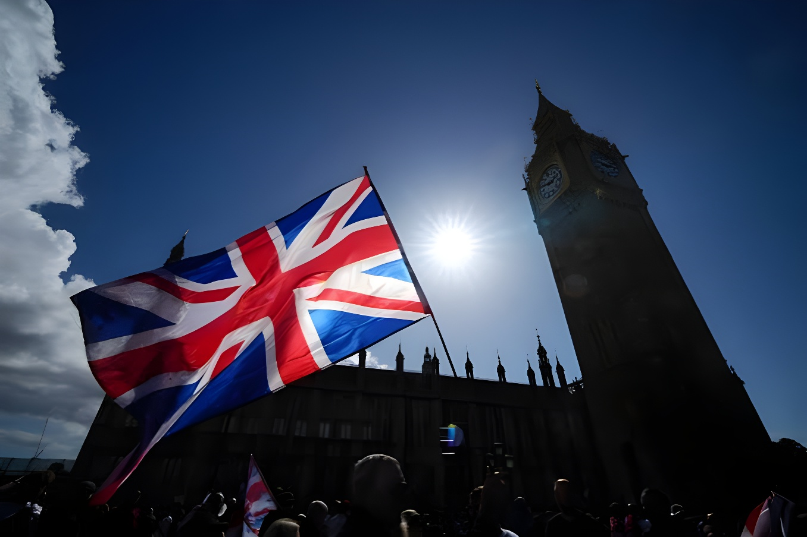

« J'ai eu la réponse claire que oui, il y en a eu. » Dans le podcast The Rest Is Politics, diffusé le dimanche 11 octobre 2026, Andy Burnham est devenu le premier Premier ministre britannique à reconnaître publiquement une ingérence russe dans le référendum de 2016 sur la sortie de l'Union européenne. Il dit l'avoir fait pour alerter les électeurs allemands et français. Nigel Farage l'a traité de menteur, et le chef du MI5 a relativisé deux jours plus tard l'efficacité des trolls russes, sans que personne n'ait encore présenté de preuve nouvelle.
01Une phrase lâchée dans un podcast

C'est au micro d'Alastair Campbell et de Rory Stewart, les deux animateurs de The Rest Is Politics (l'ancien conseiller en communication de Tony Blair et un ancien ministre conservateur), que le Premier ministre travailliste a fait cette déclaration. En arrivant à Downing Street en juillet, a-t-il raconté, il a demandé à ses conseillers si Moscou était intervenu dans le vote de 2016 : « J'ai eu la réponse claire que oui, il y en a eu. » Il n'a pas dit qui lui avait fourni cette évaluation, ni présenté de preuve, ni affirmé que l'ingérence avait changé le résultat. Ces choses, a-t-il ajouté, sont « importantes à inscrire clairement au dossier maintenant ». Le scrutin du 23 juin 2016 s'était soldé par 51,9 % pour le Leave, soit 17,4 millions de voix contre 16,1 millions, avec une participation de 72,2 %.
Jamais un chef de gouvernement britannique n'était allé aussi loin. Theresa May avait accusé la Russie en 2017 de chercher à « semer la discorde » en Occident, et le gouvernement de Boris Johnson s'en tenait en 2020 à une formule prudente : il n'avait vu « aucune preuve d'une ingérence réussie » dans le référendum.
02Un avertissement adressé à Berlin et Paris
Burnham dit avoir parlé pour aider « les électeurs en Allemagne et en France à comprendre qu'une partie de cette politique est attisée par nos ennemis, à savoir la Russie ». Il a raconté avoir évoqué l'Alternative pour l'Allemagne (AfD) avec le chancelier Friedrich Merz lors de sa visite à Berlin, le 8 octobre : selon lui, Merz lui a décrit un parti « clairement lié à la Russie, financé je crois ». Ce jour-là, les deux dirigeants avaient annoncé un partenariat contre les cyberattaques, le sabotage et les menaces hybrides venues de Russie. L'AfD, au plus haut dans les sondages, a remporté en septembre les élections de deux régions de l'Est. En France, la présidentielle aura lieu au printemps 2027.
03Ce que l'on savait déjà
Le soupçon n'est pas neuf. En 2017, des chercheurs des universités de Swansea et de Berkeley ont recensé environ 150 000 comptes liés à la Russie ayant tweeté sur le Brexit avant le vote. En 2018, Twitter a publié les données de 3 841 comptes de l'Internet Research Agency de Saint-Pétersbourg, auteurs de plus de 10 millions de messages, avec une offensive d'une journée le jour du scrutin. Selon des estimations citées lors d'une enquête parlementaire, la couverture anti-UE de RT et Sputnik valait entre 1,4 et 4,14 millions de livres. En revanche, l'enquête de la National Crime Agency sur l'origine des 8 millions de livres prêtés par l'homme d'affaires Arron Banks à la campagne du Leave s'est close en 2019 sans poursuites. Aucun de ces éléments n'a jamais démontré que le résultat avait basculé.
De la tentative à l'effet : ce qui est établi, et ce qui ne l'est pas
04Le rapport « Russia », pièce maîtresse
La référence reste le rapport de la commission parlementaire du renseignement et de la sécurité (ISC), remis au gouvernement en octobre 2019 mais publié seulement le 21 juillet 2020, après les législatives de décembre. Il reprochait au gouvernement de n'avoir « ni vu ni cherché » de preuves d'une ingérence dans le référendum, faute d'avoir demandé une véritable évaluation. Il jugeait en revanche crédibles les preuves d'une ingérence russe dans le référendum sur l'indépendance de l'Écosse, en 2014.
« I've had the clear answer that yes, there was. »(traduction : « J'ai eu la réponse claire que oui, il y en a eu. »)
05Farage crie au mensonge
Interrogé par LBC le 12 octobre, en marge d'une conférence de presse à Hythe, dans le Kent, où il présentait le plan de Reform UK pour fermer le système d'asile, Nigel Farage a répliqué : « Le Premier ministre est un menteur. » Selon lui, Boris Johnson, devenu ministre des Affaires étrangères, avait posé la même question et obtenu un « non ». « Il n'y a pas eu d'ingérence russe », a-t-il insisté, dénonçant le « canular russe » et un Burnham « déconnecté ». Le même jour, le ministre délégué aux Affaires étrangères, Stephen Doughty, a nuancé la ligne du gouvernement : la Russie a tenté d'interférer, mais sans succès.
06Le MI5 tempère
Le 13 octobre, dans son discours annuel sur les menaces, le directeur général du MI5, Sir Ken McCallum, a reconnu que la chaîne RT était « intervenue assez fortement » au moment du référendum, avec l'activité de trolls et de bots. Mais il a jugé ces trolls « relativement peu impressionnants » et mis en garde contre la tentation de leur prêter « trois mètres de haut » : il faut, a-t-il dit, distinguer « ce qui a pu être tenté et ce qui en est réellement résulté ». Il n'en a pas moins qualifié la Russie d'« agresseur numéro un », qui mène une guerre hybride juste sous le seuil d'une riposte de l'OTAN. Privée de près de 1 000 agents expulsés des ambassades depuis l'invasion de l'Ukraine, Moscou s'appuie davantage sur des volontaires locaux et des intermédiaires criminels ; l'Iran, de son côté, a suscité plus de 50 arrestations au Royaume-Uni.
Qui dit quoi ? De la négation à l'aveu
- Nigel FarageReform UK
« Il n'y a pas eu d'ingérence russe. »
- Stephen Doughtyministre délégué aux Affaires étrangères
La Russie a tenté d'interférer, mais sans succès.
- Sir Ken McCallumdirecteur général du MI5
RT est « intervenue assez fortement », mais des trolls « relativement peu impressionnants ».
- Andy BurnhamPremier ministre
« J'ai eu la réponse claire que oui, il y en a eu. »
07Moscou dément, Londres s'arme
La Russie a toujours nié toute ingérence dans les élections occidentales et dénonce une « hystérie antirusse » au Royaume-Uni ; dès 2020, le porte-parole du Kremlin, Dmitri Peskov, niait toute tentative d'influencer les électeurs du référendum. Londres, de son côté, fait de la désinformation un dossier de sécurité nationale : à l'ONU, le 22 septembre, Burnham avait dénoncé une tentative russe d'interférer dans les législatives de 2019 et lancé un centre contre les attaques informationnelles. La déclaration s'inscrit aussi dans sa stratégie européenne : fin septembre, il avait jugé que le Brexit avait fait « plus de mal que de bien » et évoqué un possible retour dans l'Union.
Chronologie
Du plus récent au plus ancien
- 13 octobre 2026
Le chef du MI5 juge les trolls russes de 2016 « relativement peu impressionnants ».
- 12 octobre 2026
Nigel Farage traite Burnham de « menteur ».
- 11 octobre 2026
Burnham reconnaît l'ingérence russe dans The Rest Is Politics.
- 8 octobre 2026
Visite à Berlin et partenariat contre les menaces hybrides.
- 21 juillet 2020
Publication du rapport « Russia » de la commission du renseignement.
- 23 juin 2016
Le Leave l'emporte avec 51,9 % des voix.